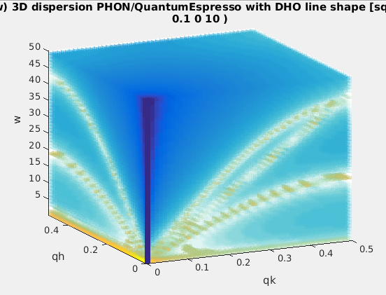
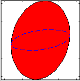
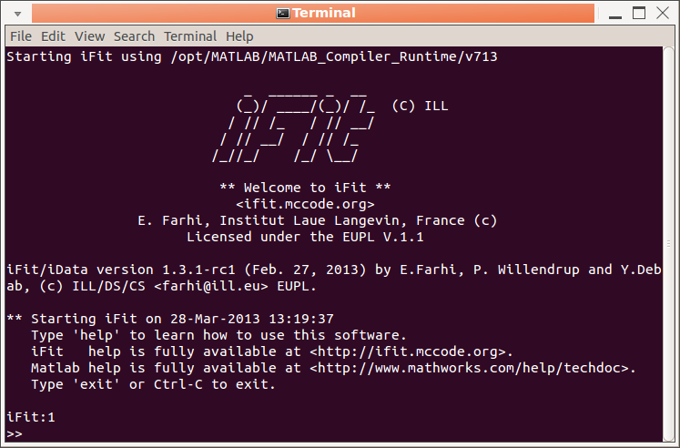
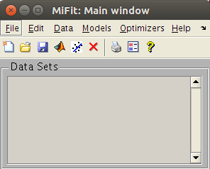
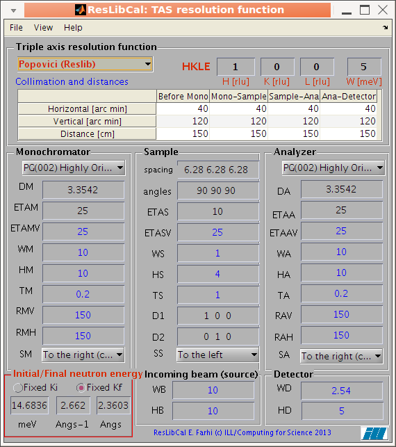

| iData | the main container for data sets |
| Load | how to import data sets into iData objects |
| Plot | how to plot a data set (1D, 2D, 3D and above) |
| Math | plenty of math to work with data sets |
| Fit | how to fit a model onto a data set (using
an optimizer) |
| Save | saving data sets |
| Optimization | routines for optimisation of anything
(including models) |
| iFunc | the main model object |
| File formats | a list of supported input file formats
(for data sets and models) |
| miFit | the main iFit user interface (for those
avoiding command lines) |
| PyFit | using iFit from Python |
| Models | pre-defined models (1D, 2D, 4D) |
| Neutron
Scattering |
Neutron scattering data treatment |
| Phonons | lattice dynamics aka phonons |
| ResLibCal | Neutron triple-axis spectrometer model,
resolution and fitting |
| McStas | Monte-Carlo neutron/x-ray ray-tracing
instrument simulation |
| From the prompt (command
line) |
User interface: miFit |
neutron TAS: ResLibCal |
|  Have a look at the Quick Start or the iFit standalone page. There, you mostly manipulate iData and iFunc objects. |
 an advanced yet simple user interface to load data sets, plot, transform, export, and fit. |
 compute the neutron TAS spectrometer resolution ellipsoid (ResCal/ResLib merge) |
Start Matlab... or iFit stand-alone
>> addpath(genpath('/some/path/to/iFit')); % not needed for the stand-alone version
>> a = iData([ ifitpath 'Data/ILL_IN6.dat' ]);
>> plot(log10(a))
>> b=2*a+log(a)
>> plot(gauss2d)
>> parameters=fits(a,gauss2d)
>> saveas(a,'filename.pdf')

>> doc(iData)and help pages for each function/method, which you can access with e.g.
>> doc(iFunc)
>> methods(iData)
>> help iDataA Tutorial (Jan 2012) is available as PDF presentations with exercises.
>> help iData/load
>> help iFunc